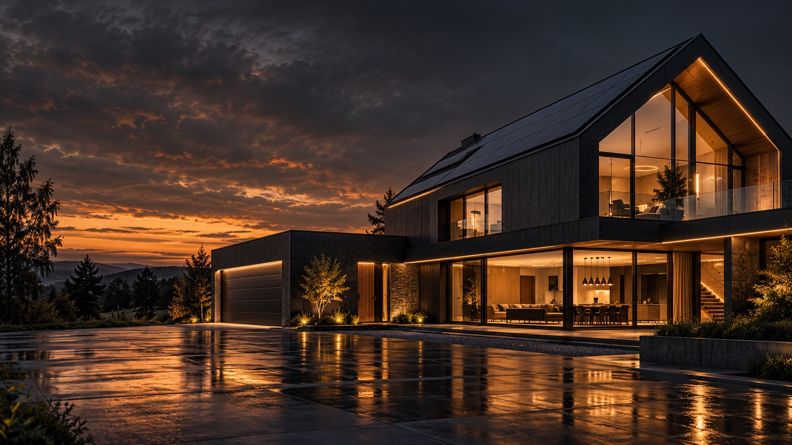

Atmosféra pro každý okamžik
Světelné scény pro práci, odpočinek i návštěvu. Osvětlení může reagovat na přítomnost a dostupné denní světlo.

Světla, stínění, teplota i energie v jednom rytmu.
Loxone se postará o každodenní rutinu.
Vy si užijete svůj domov.
Vyberte si okamžik a objevte, co může
automatizace zařídit za vás.
Stínění se otevře, světlo doplní ranní atmosféru a v koupelně vás přivítá příjemná teplota.
Světelné scény pro práci, odpočinek i návštěvu. Osvětlení může reagovat na přítomnost a dostupné denní světlo.
Žaluzie a rolety spolupracují s řízením domu. Pomáhají vytvořit soukromí a omezit letní přehřívání.
Vytápění, chlazení a větrání lze koordinovat podle využití místností. Nastavení přizpůsobíme technologiím vašeho domu.
Přebytky z fotovoltaiky mohou podle priorit sloužit ohřevu vody nebo nabíjení auta. Základem je měření a kompatibilní zařízení.
Přístup, stav oken nebo upozornění na události přehledně na jednom místě. Rozsah ochrany určuje zvolené vybavení.
Oblíbená hudba v jednotlivých zónách i společná večerní atmosféra. Audio se může stát součástí automatických scén.
Miniserver řídí připojené technologie a propojuje jejich funkce. Místo izolovaných zařízení tak vzniká jeden systém.
Automatizace běží lokálně v domě. Běžné řízení tedy nestojí na dostupnosti cloudu. Vzdálený přístup a online služby připojení k internetu potřebují.
Více o Miniserveru u Loxone ↗Automaticky na pozadí.
Ovládání tlačítkem i aplikací.
Včasné plánování umožní sladit kabeláž, rozvaděč a návazné technologie. Připravíme společně zadání: co má fungovat automaticky a co chcete ovládat sami.
Plánuji novostavbu ↗Bezdrátová technologie Loxone Air umožňuje doplnit vybrané funkce i dodatečně. Možnosti propojení a potřebné úpravy posoudíme podle současné instalace.
Řeším rekonstrukci ↗Každý dům je jiný.
Detaily probereme nad vaším projektem.
Ne. Smyslem je automatický provoz. Když chcete něco změnit, můžete využít nástěnné ovládání nebo aplikaci.
Lokální automatizace Miniserveru může pracovat dál. Bez internetu nebudou dostupné funkce závislé na online připojení, například vzdálený přístup.
U podporovaných zařízení ano. Nejdřív ověříme konkrétní střídač, měření a možnosti komunikace. Pak navrhneme využití energie podle vašich priorit.
Cenu určuje rozsah funkcí, počet místností, stav elektroinstalace a návazná zařízení. Pro smysluplnou nabídku potřebujeme znát váš záměr a podklady k objektu.
Ano, rozsah lze rozvíjet. Při úvodním plánování je dobré počítat s budoucími funkcemi, kapacitou rozvaděče a potřebnou kabeláží.
Stavíte nebo rekonstruujete?
Probereme, co má váš dům umět.